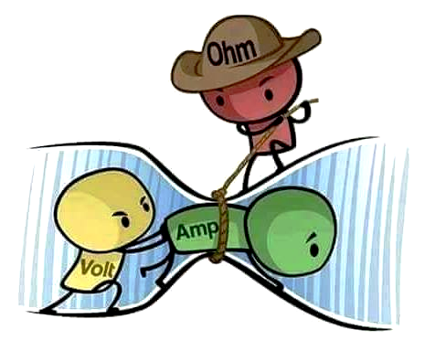

El físico y matemático alemán, George Simon Ohm, descubrió una de las leyes fundamentales de los circuitos de corriente eléctrica, conocida como Ley de Ohm. Expresa la relación que existe entre la diferencia de potencial que aplicamos a los extremos de un receptor y la intensidad de la corriente que circula por este.
La ley de Ohm relaciona las tres magnitudes eléctricas fundamentales.
La ley de Ohm expresa la relación que existe entre la diferencia de potencial que aplicamos a los extremos de un receptor y la intensidad de la corriente que circula por este.
Se refiere a la relación existente entre las tres magnitudes fundamentales. Y se puede enunciar de la siguiente manera:
“La intensidad es directamente proporcional a la tensión e inversamente proporcional a la resistencia.”
Matemáticamente se expresa:
V= I.R
donde:
V : voltaje o tensión que se aplica al receptor, medida en voltios.
I : intensidad de la corriente eléctrica que circula por el receptor, medida en amperios.
R: resistencia del receptor, medida en ohmios.